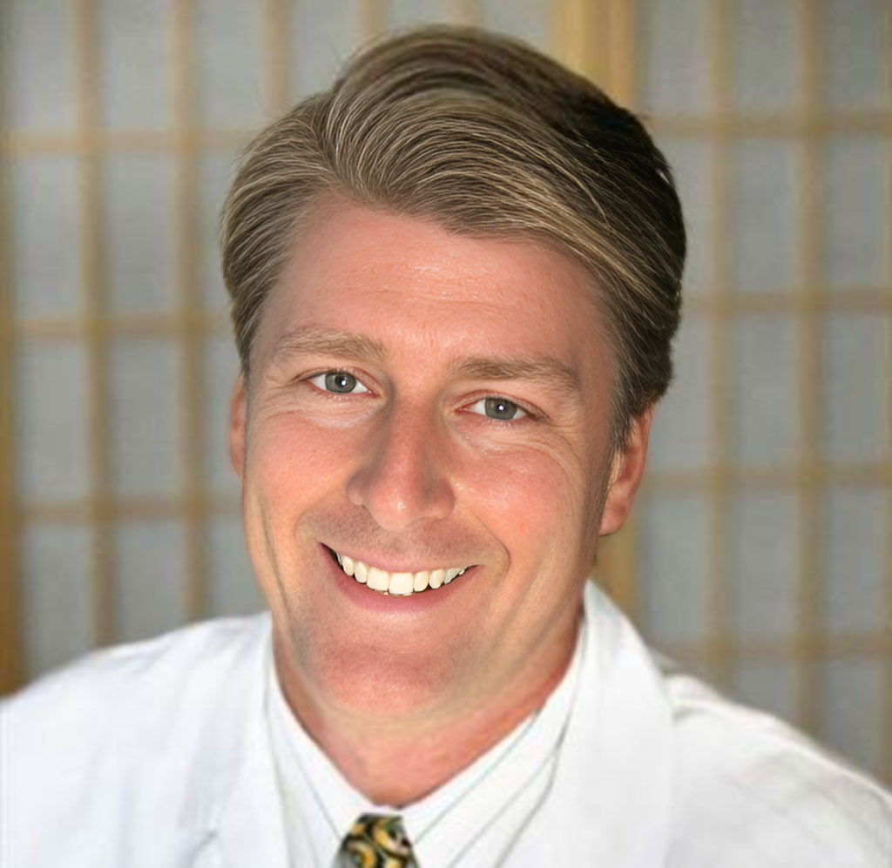

Beauty · Women Rejuvenation Inside/Outside
Top-quality Rejuvenation Treatment for Women. Beauty from inside out by The Churchill Center.
Read more for Women →THE CHURCHILL CENTER · FUNCTIONAL MEDICINE
Center For Integrative Medicine & Functional Medicine
Highest Quality Natural Medicines

Established in 2005Naturopathic medical clinic
Arcadia, CA289 W Huntington Dr, Ste 307, Arcadia, CA 91007
In person or virtualConsultations
Mandarin Spoken我们讲普通话
(opens in new tab)The Churchill Centers™ offers a healing oriented approach to integrative medicine taking into account the whole person by focusing not only on the illness but also the body, mind, and spirit. We explore all aspects of our patient’s lifestyle. As a partnership between patient and practitioner, we combine all appropriate therapies, both conventional and alternative. We recognize that good medicine should be based in good science, be inquiry driven, and be open to new paradigms.
Treatment finder
Top-quality Rejuvenation Treatment for Women. Beauty from inside out by The Churchill Center.
Read more for Women →
Top-quality Rejuvenation Treatment for Men. Beauty & Performance from inside out by The Churchill Center.
Read more for Men →

Why The Churchill Center
Unlock the potential of your health with our innovative approaches to medicine. As pioneers in California functional medicine, we take a holistic view of your well-being, addressing the underlying causes of your symptoms to create personalized treatment plans. Our California integrative medicine services combine the best of traditional medical practices with evidence-based complementary therapies, offering a comprehensive and well-rounded approach to your healthcare.
We understand that accessibility is key when it comes to your medication needs. That’s why our online pharmacy is available 24/7, ensuring that you have seamless access to prescription medications and healthcare products at any time of the day. Experience the convenience of our user-friendly platform and have peace of mind knowing that your pharmaceutical needs are just a click away.
Pamper yourself at our renowned Arcadia Medical Spa, where relaxation and rejuvenation meet cutting-edge treatments. Let our skilled professionals take you on a journey to enhance your natural beauty and well-being. From revitalizing facials to state-of-the-art laser therapies and body contouring, our spa services are designed to help you look and feel your absolute best.
Whether you’re searching for functional doctors near you or seeking comprehensive medical services, The Churchill Center is your ultimate destination. Our unwavering commitment to your well-being and our dedication to delivering exceptional care set us apart. Experience the difference of our innovative and personalized approach to healthcare. Contact us today to schedule an appointment and embark on a transformative journey to optimal health.
The Churchill Centers™ brings its renowned integrative medicine approach to Arcadia. Here, we don’t just treat you; we journey with you. Our model is a beautiful synergy of traditional medical practices coupled with alternative healing therapies. In Arcadia, you’re not just a patient; you’re a partner. As we explore all aspects of your life, from your mental state to your physical well-being, we ensure that your path to health is all-encompassing and holistic. Our address is: 289 W Huntington Dr, Ste 307, Arcadia, CA 91007
Arcadia, renowned for its rich history and beauty, is now home to The Churchill Centers™, where medicine takes a progressive leap. Our functional medicine approach focuses on understanding the root cause of your health concerns, rather than just treating symptoms. In Arcadia, we delve deep into your lifestyle, habits, and environmental factors to craft a personalized healthcare roadmap. Let’s redefine healing by targeting the underlying issues and fostering optimal wellness in Arcadia. Our address is 289 W Huntington Dr, Ste 307, Arcadia, CA 91007
Our doctors
Dr. Dana Churchill , Medical Director of the Churchill Centers ™ throughout Southern California, brings over two decades of compassionate care and healing to his patients. He has been featured on major TV network programs and world class publications including Medical Tourism Journal –Ad Avenue Group/ Forbes, Epoch Times and special appearances on NTD among them. He has been invited to Hollywood’s most prestigious ‘Industry’ events in recognition of his work as a health and wellness expert.
The Churchill Centers customize each treatment plan for their patients with the most advanced medical protocols founded on ancient empirical truths. Dr. Churchill will help you reclaim your optimal health FOR LIFE!
Patient stories
I have seen Dr. Churchill for a year now. After doing a thorough blood panel, I knew what I needed more specifically. Since then, I like to visit regularly for…
Read More » I like to visit regularly for my IV and weight-loss treatmentFrom a patient who had debilitating environmental toxicity, allergies and food sensitivities for 30 years: Yes, indeed, I am better and loving it. It is just as you said it…
Read More » Healing follows gradually after such emotional and spiritual strengtheningI have had eczema since childhood. It became worse, especially on my face and hands, in my adulthood and I began seeing allergists and dermatologists
Read More » Eczema since childhood. It became worse, especially on my face and handsThanks Doctor DanaI feel better today than I did 20 years ago!Armando N.
Read More » Quick Health ImprovementDr. Dana Show & blog
Sign up today and receive a FREE 15-minute Online consultation with our Expert Team. Discover how we can help you - don't miss out!
AppointmentNatural Supplements Plant-based tinctures for immune support, hormonal balance, and detoxification.
Visit StoreThe Churchill Center · Arcadia
Consultations in person or virtual.